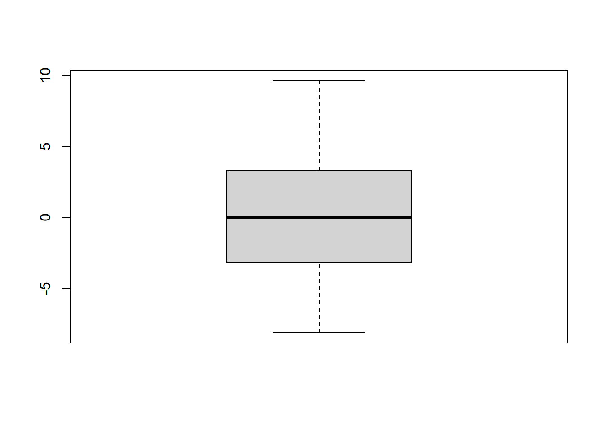
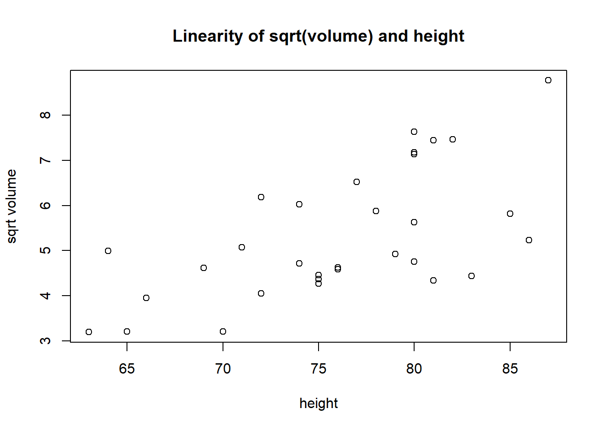

plot(y=trees$Volume,x=trees$Height,main="Linearity of volume and height",xlab="height",ylab="volume")
plot(y=trees$Volume,x=trees$Girth,main="Linearity of volume and girth",xlab="girth",ylab="volume")
첫번째 자료의 경우 경향성이 따로 나타나지 않는 것으로 보인다. 두 Plot을 비교할 경우 두번째 자료(volume,girth)가 직선으로 모형으로 세우기 적합하다고 본다. X축과 Y축의 선형성 또한 두번째 자료가 더 강하게 나타나는 것으로 보인다.
(나)
각각 r-line을 적합 시킨 후 그래프 위에 그려라. 각기 잔차를 구하여 y-hat vs. residual plot을 그리고 적합 타당성을 판단하고 비교하여라.
# 첫번째 플롯에 대해서plot(y=trees$Volume,x=trees$Height,main="Linearity of volume and height",xlab="height",ylab="volume")(z1 <-line(x=trees$Height,y=trees$Volume))
# Tukey-Tree Plot :plot(residuals(z1) ~fitted(z1), main ="Residual plot by rline:Volume~Height")abline(0,0)
boxplot(residuals(z1)) # outlier 없음
# 두번째 플롯에 대해서plot(y=trees$Volume,x=trees$Girth,main="Linearity of volume and girth",xlab="girth",ylab="volume")(z2 <-line(x=trees$Girth,y=trees$Volume))
# Tukey-Tree Plot :plot(residuals(z2) ~fitted(z2), main ="Residual plot by rline: Volume~Height")abline(0,0) # 이차함수를 따를지도 모른다.k=seq(-100,100,0.1)a<-function(x) {((1/50)*(x-35)^2)-8}lines(a(k)~k)
boxplot(residuals(z2)) # outlier 없음

첫번째 Plot의 경우 이 분산성이 발생하는 것으로 보인다. Y_hat이 작을 때에는 잔차의 폭이 좁았는데 점점 커질수록 잔차의 폭이 넓어지고 있는 모습을 보이고 있다는 점에서 그러하다. Ideal한 Residual Plot은 띠 모양으로 Plot의 점들이 x축에 평행한 직선을 이루어야 하는데 Plot에서의 잔차는 점차 늘어나고 있다는 점에서 Transformation을 통해 잔차를 조정해야 한다.
두번째 Plot의 경우에도 점들이 x축에 평행하게 모여있지는 않고 일종의 Qudratic Form (2차함수) 곡선을 이루고 있는 것으로 보인다.Ideal한 Residual Plot은 띠 모양으로 Plot의 점들이 x축에 평행 직선을 이루어야 하는데 실제 Plot의 모양은 곡선을 이루고 있는 것으로 보아 변수 들을 변환한다면 현재의 잔차들이 가지고 있는 경향성을 완화할 수 있을 것이라고 생각한다.
(다)
Volume ~ Height plot에서 직선화하기 위한 재표현을 시행착오 방법으로 찾아라. Volume만 변환시켜 보아라. Height만 변환시켜 보아라. 시행착오 과정을 모두 수록하여라.
# 단순화attach(trees)medHeight <-as.vector(3)medVolume <-as.vector(3)medHeight[1] <-median(Height[1:10]); medVolume[1] <-median(Volume[1:10])medHeight[2] <-median(Height[11:21]); medVolume[2] <-median(Volume[11:21])medHeight[3] <-median(Height[22:31]); medVolume[3] <-median(Volume[22:31])plot(medVolume~medHeight, type="b",main="MedVolume~MedHeight") # "b"= both points and line
detach(trees)# 시행착오# 먼저 Y변수에 대해서 큰부분을 작게 작은 부분을 크게 만드는 변환plot(y=sqrt(trees$Volume),x=trees$Height,main="Linearity of sqrt(volume) and height",xlab="height",ylab="sqrt volume")

plot(y=log(trees$Volume),x=trees$Height,main="Linearity of log(volume) and height",xlab="height",ylab="log volume")
# X변수에 대해서 변환을 진행plot(y=trees$Volume,x=(trees$Height)^2,main="Linearity of volume and height squares",xlab="height squares",ylab="volume")
# 책에서 제시한 변환법vh=trees$Volume/trees$Heightplot(y=vh,x=trees$Height,main="Linearity of volume/height and height",xlab="height",ylab="volume/height")
# Volume만 변화시키기# 1) y에 Sqrt 씌우기plot(y=sqrt(trees$Volume),x=trees$Height,main="Linearity of sqrt(volume) and height",xlab="height",ylab="sqrt volume")(z3 <-line(x=trees$Height,y=sqrt(trees$Volume)))
# 4) Huhvh=trees$Volume/trees$Heightplot(y=vh,x=trees$Height,main="Linearity of volume/height and height",xlab="height",ylab="volume/height")(z6 <-line(x=trees$Height,y=vh))
총 네가지 방법으로 변환을 진행해 보았는데 4가지 표현 중 x변수를 변환하는 방법의 경우 r-line 위쪽 부분의 점들이 어느정도 r-line에 평행하게 선형성을 보이고 있으나 밑부분의 점들은 선형적이지 않아 선택하지 않았다. y변수에 대한 변환 중 log와 sqrt를 비교할 경우 log 변환을 한 Plot의 가장 큰 점인 (90,4.5) 부근에 한 점이 가장자리 점들을 기준으로 한 선위에서 약간 벗어난 것으로 보이기 때문에 y변수에 대한 sqrt 변환이 log변환에 비해서 적합하다고 판단하였다.
plot(y=log(trees$Volume),x=log(trees$Height),main="Linearity of log(volume) and log(height)",xlab="log height",ylab="log volume")(z7 <-line(x=log(trees$Height),y=log(trees$Volume)))
plot(y=sqrt(trees$Volume),x=sqrt(trees$Height),main="Linearity of sqrt(volume) and sqrt(height)",xlab="sqrt height",ylab="sqrt volume")(z8 <-line(x=sqrt(trees$Height),y=sqrt(trees$Volume)))
추가로 x축 y축 전부에 log와 sqrt 변환을 적용하였는데 위의 변환들 보다 잔차들이 안정되어진 것으로 추정된다.
(라)
(다)에 찾은 변환으로 각기 r-line으로 적합하고 residual plot, residual의 boxplot, stem-and-leaf display 등으로 적합성를 비교하여라.
plot(residuals(z3) ~fitted(z3), main ="Residual plot by rline:sqrt(volume) ~ height")abline(0,0)
plot(residuals(z4) ~fitted(z4), main ="Residual plot by rline:log(volume) ~ height")abline(0,0)
plot(residuals(z5) ~fitted(z5), main ="Residual plot by rline:volume ~ height^2")abline(0,0)
plot(residuals(z6) ~fitted(z6), main ="Residual plot by rline:volume/height ~ height")abline(0,0)
plot(residuals(z7) ~fitted(z7), main ="Residual plot by rline:log volume ~ log height")abline(0,0)
plot(residuals(z8) ~fitted(z8), main ="Residual plot by rline:sqrt volume ~ sqrt height")abline(0,0)
그러나 Residual plot을 그려볼 경우 여러 변환들 중 적합해 보이는 것은 y변수에 대한 log 변환인 것으로 보인다. 나머지 변환의 경우 직선 밑 부분의 점들이 점점 줄어들고 있는 경향성이 나타나고 있는데 그럴경우 적합하지 않은 변환이기 때문이다
y변수에만 log변환을 한 경우를 다른 Residual plot을 비교할 경우 미묘한 차이지만 맨위에 있는 4개의 점들이 줄어드는 경향성이 있고 마지막점의 이상성이 다소 있다는 점에서 단점이 있지만 전반적인 Residual Plot을 비교하면 log가 가장 적정해 보인다.
boxplot(residuals(z3),main="Residual boxplot of sqrt(volume) ~ height")
boxplot(residuals(z4),main="Residual boxplot of log(volume) ~ height")
boxplot(residuals(z5),main="Residual boxplot of volume ~ height^2")
boxplot(residuals(z6),main="Residual boxplot of volume/height ~ height")
boxplot(residuals(z7),main="Residual boxplot of xy log")
boxplot(residuals(z8),main="Residual boxplot of xy sqrt")
첫번째, 두번째 boxplot의 경우 median이 lower hinge쪽에 더 가까운 것으로 보인다. 또 Whisker의 길이도 lower whisker쪽이 더 길게 나타나고 있다. Whisker의 길이와 Box내의 대칭성의 경우 3번째 Boxplot이 가장 대칭적인 것으로 보인다. 그럼에도 불구하고 log변환에서 대칭성이 크게 감소하지는 않았다는 점에서 사용 가능한 변환으로 보인다.
x변수와 y변수에 동시에 log변환을 취한 boxplot이 y변수에만 log변환을 취한 boxplot에 비해서 whisker의 길이가 대칭적이 된 것으로 보인다.
stem(residuals(z3))
The decimal point is at the |
-1 | 865
-1 | 0
-0 | 887655
-0 | 443100
0 | 3
0 | 5678
1 | 33444
1 | 58899
stem(residuals(z4))
The decimal point is 1 digit(s) to the left of the |
-6 | 6
-4 | 821
-2 | 454110
-0 | 77650
0 | 014
2 | 174
4 | 4688900
6 | 173
stem(residuals(z5))
The decimal point is 1 digit(s) to the right of the |
-2 | 431
-1 | 55
-1 | 20
-0 | 9999866
-0 | 40
0 | 1344
0 | 5
1 | 01344
1 | 566
2 | 04
stem(residuals(z6))
The decimal point is 1 digit(s) to the left of the |
-2 | 864
-1 | 7631100
-0 | 99764
0 | 034678
1 | 56889
2 | 14579
stem(residuals(z7))
The decimal point is 1 digit(s) to the left of the |
-6 | 4
-4 | 818
-2 | 46111
-0 | 887764
0 | 007
2 | 084
4 | 5789900
6 | 178
stem(residuals(z8))
The decimal point is at the |
-1 | 965
-1 | 0
-0 | 98776655
-0 | 421
0 | 044
0 | 678
1 | 22334
1 | 5788
2 | 0
stem(residuals(z3),0.5)
The decimal point is at the |
-1 | 8650
-0 | 887655443100
0 | 35678
1 | 3344458899
stem(residuals(z4),0.5)
The decimal point is at the |
-0 | 7655
-0 | 33222222221
0 | 0012334
0 | 555555677
stem(residuals(z5),0.5)
The decimal point is 1 digit(s) to the right of the |
-2 | 431
-1 | 5520
-0 | 999986640
0 | 13445
1 | 01344566
2 | 04
stem(residuals(z6),0.5)
The decimal point is 1 digit(s) to the left of the |
-2 | 864
-0 | 763110099764
0 | 03467856889
2 | 14579
stem(residuals(z7),0.5)
The decimal point is at the |
-0 | 6655
-0 | 33222222220
0 | 002233
0 | 5555555678
stem(residuals(z8),0.5)
The decimal point is at the |
-1 | 9650
-0 | 98776655421
0 | 044678
1 | 223345788
2 | 0
전반적으로 가장 큰 Cluster를 기준으로 대칭적인 종모양을 띄고 있지는 않은 것으로 보인다. y변수에 대한 sqrt변환의 경우와 log변환의 경우 그리고 x변수에 대한 제곱 변환의 경우 한개의 Cluster가 아니라 여러개의 Cluster가 있는 것으로 보인다. 교재에서 제시한 변환 방식이 Skewed to the right 되어 있지만 그나마 한개의 종모양의 형태를 띄고 있는 것으로 보인다.
xy변수에 대한 log변환을 취한 경우 Stem 4를 제외하면 전반적으로 종모양이 잘 이루어지고 있는 것으로 보인다. stem 4가 이상치가 아니라면 2개의 cluster에 의한 쌍봉분포일 것이고, stem 4가 이상치라면 정규분포를 잘 이루고 있는 것으로 볼 수 있다.
2번
R의 airquality 자료를 이용하여 Ozone의 양을 제일 잘 예측할 수 있는 변수를 찾으려고 한다. 이 자료는 결측치가 많은 자료이다. 결측치를 분석에서 제외할 때 두 가지 방법이 있다.
하나는 네 변수 중에 하나라도 결측값이 있으면 모두 사용하지 않는 방법 (이 자료의 경우는 해당 row를 사용하지 않음; case-wise deletion) 인데 그렇게 되면 너무 많은 자료를 잃게 된다. 다른 하나는 각 분석단계에서 가능한 많은 자료를 이용하는 방법이 있다(pair-wise deletion). 예를 들면 Ozone의 평균값을 구할 때는 Ozone의 결측값만 제외시키고, Ozone과 Solar.R의 r-line 구할 때는 Ozone과 Solar.R에서만 결측이 생긴 자료를 제외하고 분석하는 것이다. 여기서의 분석은 두 번째 방법으로 하여라. R command 사용시 결측값을 제외시키는 작업을 따로 하지 않아도 자동으로 두 번째 방법이 적용된다.
(가)
Ozone을 Y변수로 하고, Solar.R, Wind, Temp 각각의 세 X 변수에 대하여 산점도를 그리고 변환이 필요하면 변환하여 r-line으로 적합한 후 residual 분석 등으로 최적 X 변수의 순위를 선정하여라.
Ozone 자료의 결측치 비율이 24.18%로 거의 1/4에 해당하는 자료에 대한 Ozone 데이터가 나타나지 않은 것으로 보인다. 따라서 분석을 진행 할때 있어 이부분을 유의해야 할 것으로 보인다. Solar.R자료는 약 4.58%에 해당하는 자료가 현재 결측되어진 것으로 보인다.
Ozone~Solar.R
attach(airquality)plot(Ozone~Solar.R,main="linearity of Ozone ~ Solar")
# 선형관계보다는 기울기가 음수인 이차함수의 관계인 것으로 보인다. y변수 변환을 통해 선형성을 확보 plot(y=log(Ozone),x=Solar.R,main="Linearity of log(Ozone) and Solar.R",xlab="Solar.R",ylab="log(Ozone)")(z1 <-line(y=log(Ozone),x=Solar.R))
plot(residuals(z1) ~fitted(z1), main ="Residual plot by rline:log y ~ x")abline(0,0)
plot(residuals(z2) ~fitted(z2), main ="Residual plot by rline:sqrt y ~ x")abline(0,0)
plot(residuals(z3) ~fitted(z3), main ="Residual plot by rline: y~ x^2")abline(0,0)
# log 변환 boxplot(residuals(z1)) # outlier 1개
boxplot(residuals(z2)) # outlier 없음
boxplot(residuals(z3)) # outlier 2개
# stem and leafstem(residuals(z1))
The decimal point is 1 digit(s) to the left of the |
-26 | 7
-24 |
-22 |
-20 |
-18 |
-16 |
-14 | 44
-12 | 4342
-10 | 4
-8 | 96624
-6 | 763776533321
-4 | 88610854
-2 | 865407632
-0 | 8744221088742
0 | 001139
2 | 0344802445799
4 | 0114735
6 | 44568
8 | 1280002234469
10 | 602689
12 | 44556
14 | 7
stem(residuals(z2))
The decimal point is at the |
-3 | 20
-2 | 999432000
-1 | 7666655544443221111000
-0 | 9999766543333222221110
0 | 0013357899999
1 | 001111222677
2 | 0122667799
3 | 223344577789
4 | 1679
5 | 0015
6 |
7 | 1
stem(residuals(z3))
The decimal point is 1 digit(s) to the right of the |
-3 | 43
-2 | 976400
-1 | 986555554433332221111000
-0 | 99998776655543333222211
0 | 00011446
1 | 011122233344568
2 | 1459
3 | 01279999
4 | 2569
5 | 1117789
6 | 03
7 | 06
8 | 0366
9 | 8
10 |
11 |
12 |
13 | 5
cor.test(Ozone,Solar.R,na.rm=T)
Pearson's product-moment correlation
data: Ozone and Solar.R
t = 3.8798, df = 109, p-value = 0.0001793
alternative hypothesis: true correlation is not equal to 0
95 percent confidence interval:
0.173194 0.502132
sample estimates:
cor
0.3483417
cor.test(log(Ozone),Solar.R,na.rm=T)
Pearson's product-moment correlation
data: log(Ozone) and Solar.R
t = 5.3509, df = 109, p-value = 4.885e-07
alternative hypothesis: true correlation is not equal to 0
95 percent confidence interval:
0.2947757 0.5921585
sample estimates:
cor
0.4561082
cor.test(sqrt(Ozone),Solar.R,na.rm=T)
Pearson's product-moment correlation
data: sqrt(Ozone) and Solar.R
t = 4.5948, df = 109, p-value = 1.17e-05
alternative hypothesis: true correlation is not equal to 0
95 percent confidence interval:
0.2339963 0.5480629
sample estimates:
cor
0.4028201
cor.test(Ozone,s2,na.rm=T)
Pearson's product-moment correlation
data: Ozone and s2
t = 2.8565, df = 109, p-value = 0.00513
alternative hypothesis: true correlation is not equal to 0
95 percent confidence interval:
0.08152183 0.42918594
sample estimates:
cor
0.2639047
# y변수에 그래프의 잔차제곱 합sum(residuals(z1)^2)
[1] 66.29339
sum(residuals(z2)^2)
[1] 596.0805
sum(residuals(z3)^2)
[1] 129877.1
detach(airquality)
총 3가지 변환 중 y축에 대한 변환들이 잔차들이 안정되어진 것으로 보인다. 1번 변환 (y변수만 log 변환)의 경우 자료가 잘 퍼져있다는 장점이 있으나 잔차들의 곡선의 경향성이 완전히 사라지지는 않은 것으로 보인다. 잔차의 크기가 작은 편이다. 2번 변환 (y변수만 sqrt 변환)의 경우 자료에서의 곡선성이 거의 사라졌다는 장점이 있으나 잔차의 y축으로 퍼진 범위가 넓어졌다.
변환한 그래프들을 기준으로 전반적으로 Ozone량과 Solar.R의 값은 양의 상관관계를 가지고 있는 것으로 보인다.
Ozone~Wind
attach(airquality)attach(airquality)
The following objects are masked from airquality (pos = 3):
Day, Month, Ozone, Solar.R, Temp, Wind
plot(Ozone~Wind,main="linearity of Ozone ~ Wind")(z <-line(x=Wind,y=Ozone))
plot(residuals(z1) ~fitted(z1), main ="Residual plot by rline")abline(0,0)
plot(residuals(z2) ~fitted(z2), main ="Residual plot by rline")abline(0,0)
plot(residuals(z3) ~fitted(z3), main ="Residual plot by rline")abline(0,0)
boxplot(residuals(z1)) # three outliers
boxplot(residuals(z2)) # one outlier
boxplot(residuals(z3)) # two outliers
stem(residuals(z1))
The decimal point is at the |
-3 | 5
-3 |
-2 |
-2 | 11
-1 |
-1 | 4221100
-0 | 988887776666665555
-0 | 444433333333222222221111110000
0 | 000111122222223333333344444
0 | 555555555566677777899999
1 | 01133
1 | 6
2 | 3
stem(residuals(z2))
The decimal point is at the |
-5 | 11
-4 | 1
-3 | 85111
-2 | 9887433322100
-1 | 7766655432111100000
-0 | 998888887665443310
0 | 0011222344455666999
1 | 00012234445666777999
2 | 01222246899
3 | 134667
4 | 7
5 |
6 | 4
stem(residuals(z3))
The decimal point is 1 digit(s) to the right of the |
-5 | 5
-4 | 64310
-3 | 877643322
-2 | 9987765432110
-1 | 8887766666544220
-0 | 98876654444320
0 | 00134455667788999
1 | 01146799
2 | 00346689
3 | 0111123447
4 | 0277889
5 | 234
6 | 12
7 | 9
8 |
9 | 2
10 |
11 | 8
# y변수 그래프의 잔차제곱 합sum(residuals(z1)^2)
[1] 66.85564
sum(residuals(z2)^2)
[1] 489.5301
sum(residuals(z3)^2)
[1] 113187.1
cor.test(Ozone,Wind,na.rm=T)
Pearson's product-moment correlation
data: Ozone and Wind
t = -8.0401, df = 114, p-value = 9.272e-13
alternative hypothesis: true correlation is not equal to 0
95 percent confidence interval:
-0.7063918 -0.4708713
sample estimates:
cor
-0.6015465
cor.test(log(Ozone),Wind,na.rm=T)
Pearson's product-moment correlation
data: log(Ozone) and Wind
t = -6.822, df = 114, p-value = 4.551e-10
alternative hypothesis: true correlation is not equal to 0
95 percent confidence interval:
-0.6563096 -0.3948621
sample estimates:
cor
-0.5384181
cor.test(sqrt(Ozone),Wind,na.rm=T)
Pearson's product-moment correlation
data: sqrt(Ozone) and Wind
t = -7.8938, df = 114, p-value = 1.983e-12
alternative hypothesis: true correlation is not equal to 0
95 percent confidence interval:
-0.7008452 -0.4622775
sample estimates:
cor
-0.5944899
cor.test(Ozone,w2,na.rm=T)
Pearson's product-moment correlation
data: Ozone and w2
t = -6.2579, df = 114, p-value = 7.055e-09
alternative hypothesis: true correlation is not equal to 0
95 percent confidence interval:
-0.6298998 -0.3561715
sample estimates:
cor
-0.505653
detach(airquality)
3가지 변환 중 Ozone에 sqrt를 취한 변환이 가장 적절해 보인다. Boxplot 기준으로 Residual에서 한개의 Outlier가 존재하고 median에서 hinge들 까지의 길이와 whisker의 길이들이 서로 각각 대칭적인 것으로 보인다. 줄기 잎 그림을 그렸더니 두 변환에서 모두 0을 중심으로 하는 종모양을 어느정도 이루고 있는 것으로 보인다. 변환 이전에 비해서 잔차들이 안정된 것으로 보이지만 완전하지 않다. 변환한 데이터들 기준으로 Ozone과 Wind는 전반적으로 음의 상관관계를 보이고 있는 것을 확인할 수 있다.
### Ozone~Tempattach(airquality)
The following objects are masked from airquality (pos = 3):
Day, Month, Ozone, Solar.R, Temp, Wind
plot(Ozone~Temp,main="linearity of Ozone ~ Temp")(z <-line(x=Temp,y=Ozone))
# 직선에서 많이 떨어져있는 3~5개정도의 점을 제외하면 전반적으로 변수들이 양의 상관관계를 보이고 있는 것으로 보인다.airquality3=airquality[order(airquality$Temp),]medOzone <-as.vector(3)medTemp <-as.vector(3)medOzone[1] <-median(airquality3$Ozone[1:51],na.rm=T); medTemp[1] <-median(airquality3$Temp[1:51],na.rm=T)medOzone[2] <-median(airquality3$Ozone[52:102],na.rm=T); medTemp[2] <-median(airquality3$Temp[52:102],na.rm=T)medOzone[3] <-median(airquality3$Ozone[103:153],na.rm=T); medTemp[3] <-median(airquality3$Temp[103:153],na.rm=T)plot(medOzone ~ medTemp, type="b")
# 증가하는 convex 함수의 관계인 것으로 보인다. y변수 변환을 통해 선형성을 확보 plot(y=log(Ozone),x=Temp,main="Linearity of log ozone and temp",xlab="temp",ylab="log Ozone")(z1<-line(y=log(Ozone),x=(Temp)))
plot(residuals(z1) ~fitted(z1), main ="Residual plot by rline")abline(0,0)
plot(residuals(z2) ~fitted(z2), main ="Residual plot by rline")abline(0,0)
plot(residuals(z3) ~fitted(z3), main ="Residual plot by rline")abline(0,0)
boxplot(residuals(z1)) # 5 outliers
boxplot(residuals(z2)) # 2 outliers
boxplot(residuals(z3)) # 3 outliers
stem(residuals(z1))
The decimal point is 1 digit(s) to the left of the |
-18 | 0
-16 | 6
-14 | 9
-12 |
-10 | 700
-8 |
-6 | 7764228864331
-4 | 65187640
-2 | 9975322111074321
-0 | 866655420732111
0 | 112356679002345889
2 | 05666889113344689
4 | 175579
6 | 11357557
8 | 67
10 | 4676
12 | 2
14 | 04
stem(residuals(z2))
The decimal point is at the |
-4 | 0
-3 | 811
-2 | 65311000
-1 | 9987777666444443333322221000
-0 | 888888876665522210
0 | 0011112233344455555677788888999
1 | 012333334455588
2 | 013668
3 | 007
4 | 04
5 |
6 | 1
stem(residuals(z3))
The decimal point is 1 digit(s) to the right of the |
-4 | 10
-3 | 773100
-2 | 88754332111
-1 | 888877666666655444443211100
-0 | 999977654220
0 | 011223344567888899999
1 | 0002222233344445556889
2 | 12238
3 | 00128
4 | 55
5 |
6 |
7 | 15
8 |
9 |
10 |
11 | 8
# y변수 그래프의 잔차제곱 합sum(residuals(z1)^2)
[1] 40.98835
sum(residuals(z2)^2)
[1] 332.1941
sum(residuals(z3)^2)
[1] 64694.05
cor.test(Ozone,Temp)
Pearson's product-moment correlation
data: Ozone and Temp
t = 10.418, df = 114, p-value < 2.2e-16
alternative hypothesis: true correlation is not equal to 0
95 percent confidence interval:
0.5913340 0.7812111
sample estimates:
cor
0.6983603
cor.test(sqrt(Ozone),(Temp))
Pearson's product-moment correlation
data: sqrt(Ozone) and (Temp)
t = 11.869, df = 114, p-value < 2.2e-16
alternative hypothesis: true correlation is not equal to 0
95 percent confidence interval:
0.6491335 0.8152728
sample estimates:
cor
0.7434629
cor.test(log(Ozone),(Temp))
Pearson's product-moment correlation
data: log(Ozone) and (Temp)
t = 11.741, df = 114, p-value < 2.2e-16
alternative hypothesis: true correlation is not equal to 0
95 percent confidence interval:
0.6444258 0.8125409
sample estimates:
cor
0.7398211
cor.test((Ozone),t2)
Pearson's product-moment correlation
data: (Ozone) and t2
t = 10.859, df = 114, p-value < 2.2e-16
alternative hypothesis: true correlation is not equal to 0
95 percent confidence interval:
0.6100642 0.7923742
sample estimates:
cor
0.7130697
detach(airquality)
3가지 변환 중 sqrt 변환이 가장 적절해 보인다. boxplot 기준으로 median에서 hinge들까지의 거리가 적절해보이고 (다소 위쪽으로 몰려있는 것 처럼 보이지만), whisker의 길이도 대칭적인 것으로 보인다. 다만 outlier의 수는 2개이다. Stem and Leaf Plot에서 변환 이후 데이터에서 종 모양이 대칭적으로 나타나는 것 처럼 보인다.
변환한 데이터들 기준으로 Ozone과 Temp는 전반적으로 양의 상관관계를 보이고 있는 것을 확인할 수 있다.
변환된 데이터들의 Residual plot들을 기준으로 볼 때 예측력이 가장 높은 지표는 Wind변수이고, 다음으로는 Temp변수이고, 다음으로는 Solar.R변수 인 것으로 추측된다. Residual들이 가장 넓게 퍼져있는 지표는 Soalr.R변수이고 나머지 두변수들은 Residual이 원형으로 다소 뭉쳐있는데 상대적으로 Temp 변수들이 많이 퍼져있기 때문에 Wind 변수의 순위를 높게 잡았다.
X~Y둘다 변환
choose(3,1)
[1] 3
attach(airquality)
The following objects are masked from airquality (pos = 3):
Day, Month, Ozone, Solar.R, Temp, Wind
# Ozone ~ Solar.Rcor.test(Ozone,Solar.R)
Pearson's product-moment correlation
data: Ozone and Solar.R
t = 3.8798, df = 109, p-value = 0.0001793
alternative hypothesis: true correlation is not equal to 0
95 percent confidence interval:
0.173194 0.502132
sample estimates:
cor
0.3483417
Call:
lm(formula = sqrt(Ozone) ~ sqrt(Solar.R) + sqrt(Temp) + sqrt(Wind),
data = airquality)
Residuals:
Min 1Q Median 3Q Max
-3.1313 -1.0142 -0.2502 0.9461 4.2580
Coefficients:
Estimate Std. Error t value Pr(>|t|)
(Intercept) -9.59783 3.01971 -3.178 0.001937 **
sqrt(Solar.R) 0.12993 0.03477 3.737 0.000301 ***
sqrt(Temp) 2.12867 0.29694 7.169 1.02e-10 ***
sqrt(Wind) -1.55165 0.26821 -5.785 7.28e-08 ***
---
Signif. codes: 0 '***' 0.001 '**' 0.01 '*' 0.05 '.' 0.1 ' ' 1
Residual standard error: 1.392 on 107 degrees of freedom
(42 observations deleted due to missingness)
Multiple R-squared: 0.6837, Adjusted R-squared: 0.6748
F-statistic: 77.09 on 3 and 107 DF, p-value: < 2.2e-16
변환전 데이터로 회귀분석 기준으로 변수들의 설명력을 볼 경우 Wind, Temp, Solar.R순서이다. 다만, 변환이 이루어지지 않았기 때문에 극단치에 영향을 많이 받았을 가능성이 있다. Sqrt나 Log변환을 진행 한 이후 회귀분석을 진행하면 영향력이 강한 독립변수는 Wind, Temp, Solar.R동일한 순서인 것으로 보인다.
위에서 상관계수를 계산했을 때 확인했던 것처럼 Wind는 음의 회귀계수, 나머지 두 독립변수는 양의 회귀게수이다.
(결론)
Ozone 변수에 Sqrt를 취한 값에 대한 적합값의 잔차들을 제곱해서 더할 경우 다음과 같다. Solar.R: 596.0805 Wind: 489.5301 Temp: 332.194
잔차 제곱합의 기준에서 가장 작은 순서대로 fitting이 잘 되었다고 하였을 때, Temp, Wind, Solar.R 변수들의 순서로 Multiple r-line을 적합해보고자 한다.
(나)
세 X 변수 사이의 종속성(dependency)을 X-Y 그래프로 직선 또는 곡선 관계의 경향이 있는 지 판단하여라. 세 변수가 한꺼번에 종속 관계가 있을 수 있으나 3차원 그래프를 이용해야 하므로 일단 세 변수 중 두 개씩 골라 X-Y 그래프를 그리고 두 변수 사이의 직선 또는 곡선 관계를 파악하여라. 필요한 경우에는 r-line으로 적합하여 판단하여라. (이러한 분석은 다중회귀식으로 모형을 확장할 때 필요한 작업이다)
choose(3,2)
[1] 3
Wind~Solar.R
attach(airquality)
The following objects are masked from airquality (pos = 3):
Day, Month, Ozone, Solar.R, Temp, Wind
The following objects are masked from airquality (pos = 4):
Day, Month, Ozone, Solar.R, Temp, Wind
plot(Wind~Solar.R,main="linearity of Solar.R ~ Wind")
cor.test(Wind,Solar.R) # 상관관계가 없음
Pearson's product-moment correlation
data: Wind and Solar.R
t = -0.6826, df = 144, p-value = 0.496
alternative hypothesis: true correlation is not equal to 0
95 percent confidence interval:
-0.2172359 0.1066406
sample estimates:
cor
-0.05679167
cor.test(Wind,sqrt(Solar.R)) # 상관관계가 없음
Pearson's product-moment correlation
data: Wind and sqrt(Solar.R)
t = -1.1529, df = 144, p-value = 0.2509
alternative hypothesis: true correlation is not equal to 0
95 percent confidence interval:
-0.25413132 0.06787189
sample estimates:
cor
-0.09563089
cor.test(Wind,log(Solar.R)) # 상관관계가 없음
Pearson's product-moment correlation
data: Wind and log(Solar.R)
t = -1.4876, df = 144, p-value = 0.139
alternative hypothesis: true correlation is not equal to 0
95 percent confidence interval:
-0.27988233 0.04022473
sample estimates:
cor
-0.1230276
cor.test(Wind,log(Solar.R)) # 상관관계가 없음
Pearson's product-moment correlation
data: Wind and log(Solar.R)
t = -1.4876, df = 144, p-value = 0.139
alternative hypothesis: true correlation is not equal to 0
95 percent confidence interval:
-0.27988233 0.04022473
sample estimates:
cor
-0.1230276
cor.test(Wind,sqrt(Solar.R)) # 상관관계가 없음
Pearson's product-moment correlation
data: Wind and sqrt(Solar.R)
t = -1.1529, df = 144, p-value = 0.2509
alternative hypothesis: true correlation is not equal to 0
95 percent confidence interval:
-0.25413132 0.06787189
sample estimates:
cor
-0.09563089
detach(airquality)
태양 복사와 바람 변수는 서로 관계가 없는 것으로 보인다.
Wind~Temp
attach(airquality)
The following objects are masked from airquality (pos = 3):
Day, Month, Ozone, Solar.R, Temp, Wind
The following objects are masked from airquality (pos = 4):
Day, Month, Ozone, Solar.R, Temp, Wind
plot(Wind~Temp,main="linearity of Wind ~ Temp")(z <-line(x=Temp,y=Wind))
The decimal point is at the |
-4 | 0
-3 | 911
-2 | 6532110
-1 | 99888777776544444333222211100
-0 | 999888666665322110
0 | 0111222333455555566667788889
1 | 000122333444456789
2 | 11367
3 | 0128
4 | 03
5 |
6 | 1
stem(residuals(z3))
The decimal point is 1 digit(s) to the right of the |
-4 | 10
-3 | 773100
-2 | 88754332111
-1 | 888877666666655444443211100
-0 | 999977654220
0 | 011223344567888899999
1 | 0002222233344445556889
2 | 12238
3 | 00128
4 | 55
5 |
6 |
7 | 15
8 |
9 |
10 |
11 | 8
cor.test(log(Temp),Solar.R,na.rm=T)
Pearson's product-moment correlation
data: log(Temp) and Solar.R
t = 3.471, df = 144, p-value = 0.0006847
alternative hypothesis: true correlation is not equal to 0
95 percent confidence interval:
0.1208668 0.4212917
sample estimates:
cor
0.2778595
cor.test(sqrt(Temp),Solar.R,na.rm=T)
Pearson's product-moment correlation
data: sqrt(Temp) and Solar.R
t = 3.4587, df = 144, p-value = 0.0007142
alternative hypothesis: true correlation is not equal to 0
95 percent confidence interval:
0.1198963 0.4204814
sample estimates:
cor
0.2769505
cor.test(Temp,s2,na.rm=T)
Pearson's product-moment correlation
data: Temp and s2
t = 2.2271, df = 144, p-value = 0.0275
alternative hypothesis: true correlation is not equal to 0
95 percent confidence interval:
0.0206361 0.3349912
sample estimates:
cor
0.1824728
detach(airquality)
Solar.R변수와 Temp 변수는 서로 양의 상관관계를 가지고 있다. (다만 2차함수 곡선의 관계인 것으로 보인다.) 변환을 통해 그러한 경향성을 완화시키고자 하였는데 log변환의 경우 여전히 Residual Plot에서 곡선의 경향성이 남아있다 반면, Sqrt 변환은 위의 두개의 Outlier을 제외하면 곡선의 경향성이 다소 완화되어진 것으로 보인다.
정리하면 세개의 변수들을 서로 상관성이 있는 것으로 보이며, multicollinearity issue가 발생할 수 있기 대문에 회귀분석을 진행할 때 유의해야 할 것으로 보인다. (wind <– Temp <– Solar.R, 한단계 거친 상관성)
결측치 자료를 불완전 자료(incomplete data, missing data)라고 하고 불완전하지만 정보를 갖고 있으니 최대한 살려서 분석하려고 하는 시도는 당연한 것이다. missing 된 부분을 다른 자료들의 패턴을 이용하여 complete로 만들어 사용하려는 방법들이 Sampling (표본조사론) 분야에서 연구되고 있다. 당연히 Bayesian 방법도 가능하다. EDA 분야까지 응용되지는 않고 있다. (말 그대로 E=exploration, 있는 그대로 explore 해야지)
3번
(가)
trees 자료를 multiple r-line으로 적합하여라.
attach(trees)cor.test(log(Height),log(Girth))
Pearson's product-moment correlation
data: log(Height) and log(Girth)
t = 3.3675, df = 29, p-value = 0.002155
alternative hypothesis: true correlation is not equal to 0
95 percent confidence interval:
0.2165351 0.7446400
sample estimates:
cor
0.5301949
cor.test(log(Height),log(Volume))
Pearson's product-moment correlation
data: log(Height) and log(Volume)
t = 4.5895, df = 29, p-value = 7.928e-05
alternative hypothesis: true correlation is not equal to 0
95 percent confidence interval:
0.3821245 0.8155363
sample estimates:
cor
0.6486377
The following objects are masked from airquality (pos = 3):
Day, Month, Ozone, Solar.R, Temp, Wind
The following objects are masked from airquality (pos = 4):
Day, Month, Ozone, Solar.R, Temp, Wind
# 결측치들을 Drop해서 중간에 Fit에서 Length가 안 맞아서 생기는 오류를 해결하고자 하였음.plot(y=sqrt(Ozone),x=Temp,main="Linearity of sqrt Ozone ~ Temp")(z <-line(x=Temp,y=sqrt(Ozone)))
The following objects are masked from airquality (pos = 3):
Day, Month, Ozone, Solar.R, Temp, Wind
The following objects are masked from airquality (pos = 4):
Day, Month, Ozone, Solar.R, Temp, Wind
# 결측치들을 Drop해서 중간에 Fit에서 Length가 안 맞아서 생기는 오류를 해결하고자 하였음.plot(y=sqrt(Ozone),x=(Wind),main="Linearity of sqrt Ozone ~ Wind")(z <-line(x=(Wind),y=sqrt(Ozone)))